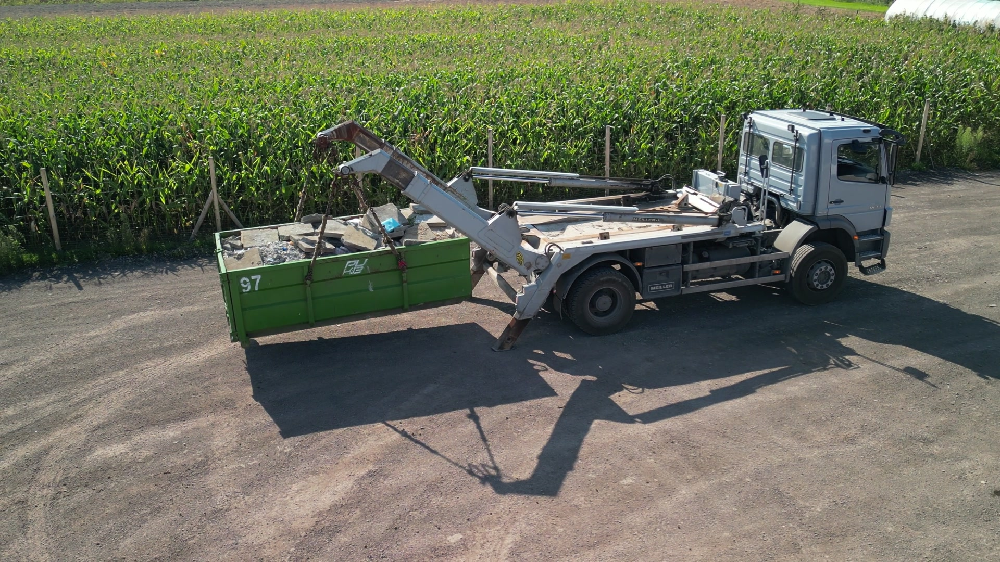
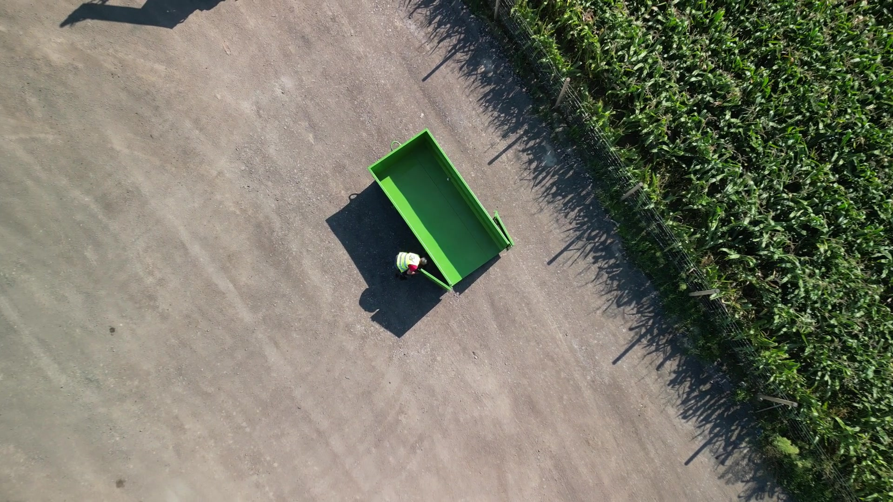

PUKiB
Kontenery · Śląsk
Podstawimy kontener na gruz, odpady budowlane lub mieszane - często jeszcze tego samego dnia. 14 lat doświadczenia, 18 500 odebranych kontenerów, transport po całym Śląsku.

Klient indywidualny, firma budowlana, deweloper, niezależnie od skali, robimy to samo: dostarczamy kontener, odbieramy odpady, wystawiamy fakturę.
Trzy rozmiary, 7, 10 i 36 m³. Dostosowane do skali zlecenia: od remontu mieszkania po wyburzenia. Kontener stoi do 5 dni roboczych bez dodatkowych opłat.

Spółka z Gliwic, baza transportowa w Jastrzębiu-Zdroju. Specjalizujemy się w jednej rzeczy, kontenerach i odpadach.
Od 14 lat obsługujemy zarówno klientów indywidualnych, przy remontach i porządkach, jak i firmy budowlane, deweloperów oraz instytucje publiczne. Każde zlecenie traktujemy indywidualnie, niezależnie od tego, czy chodzi o jeden mały kontener z gruzem, czy o kilkumiesięczną budowę z odbiorami co tydzień. Działamy w pełnej zgodności z BDO i KPO, bez zbędnych formalności po stronie klienta.

Pracujemy z deweloperami, generalnymi wykonawcami, zakładami produkcyjnymi i magazynami w całym województwie śląskim. Indywidualne ramówki, faktury VAT, raporty BDO.
Stałe odbiory z placów budów, gruz, mieszane odpady budowlane.
Wieloetapowa obsługa, od wykopów po wykończenia.
Cykliczny odbiór odpadów technologicznych i przemysłowych.
Obsługa kontenerów na opakowania, palety, makulaturę.
Stałe odbiory z osiedli, gabaryty, porządki sezonowe.
Indywidualne kontrakty obsługi, faktury VAT, BDO.
Cztery pytania, które klienci zadają nam najczęściej. Jeśli nie znajdziesz tu odpowiedzi, zadzwoń, mamy mało czasu na e-maile, ale telefon zawsze odbieramy.
Najszybciej, telefonicznie pod numerem 503 759 504. Możesz też napisać na kontenery@pukib.pl lub skorzystać z formularza zamówienia. Zwykle odpowiadamy w ciągu godziny w dni robocze.
Kontener może stać na Twojej posesji do 5 dni roboczych bez dodatkowych opłat. Jeśli potrzebujesz na dłużej, doliczamy 25 zł netto za każde rozpoczęte 24 godziny dzierżawy.
Odpady budowlane, gruz, śmieci przemysłowe, wielkogabarytowe, zielone (gałęzie, trawa). Odbieramy też papę, styropian, wełnę mineralną, makulaturę, tworzywa, szkło, w tych przypadkach prosimy o kontakt w celu indywidualnej wyceny.
Tak, w miarę dostępności floty. Dla zgłoszeń odebranych w godzinach porannych zwykle udaje nam się podstawić kontener jeszcze tego samego dnia. W pozostałych przypadkach realizujemy zamówienie następnego dnia roboczego. Płatność przelewem na podstawie faktury VAT, dla stałych klientów ramówki i odroczone terminy.
Najnowsze realizacje, ciekawostki branżowe i okazjonalne promocje prosto z naszego Facebooka.
Najszybciej, telefonicznie. Bezpośrednie numery do każdej osoby w PUKiB poniżej. Mamy też dwie lokalizacje: siedzibę w Gliwicach i bazę transportową w Jastrzębiu-Zdroju.
ul. Chudoby 4/1
44-100 Gliwice
Polska · województwo śląskie
ul. Dębina 16
44-335 Jastrzębie-Zdrój
Polska · województwo śląskie
Wybierz rozmiar, podaj adres i preferowany termin. Odzwonimy potwierdzić szczegóły, najczęściej w ciągu godziny w dni robocze.